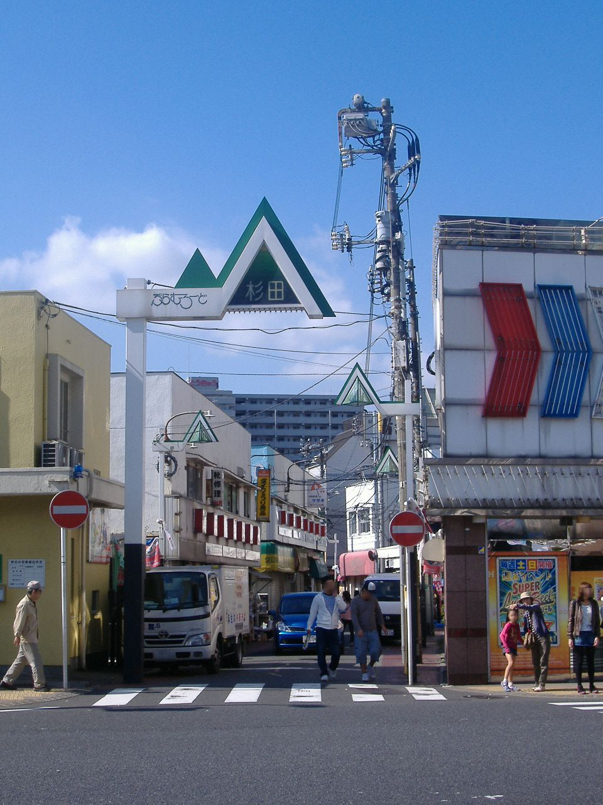

CASE 30 / 日本 / 横浜市
YOKOHAMAリビングラボサポートオフィス
YOKOHAMAリビングラボサポートオフィス
地域ごとの活動を支援し、実行・事業化を担う人につなぐ。
横浜のリビングラボ全体を単一施設とみなさず、地区ごとの活動と、それらを支援する民間法人・市の関係として読む。サポートオフィスは市民活動が事業として続く際の障壁を、専門家や事業者との接続で支援する。地域で実物やサービスが動いた成果は、その地区の実施主体にも帰属する。
産業・研究ネットワーク · 調査確認日 2026.09.28

関連地区の過去の風景
PHOTO: 妖精書士 / Wikimedia Commons · 掲載元 ↗ · Public domain（著作者による権利放棄） ↗写真の詳細
支援する地域ラボの一つ、磯子杉田の生活圏にある商店街（2009年）。活動開始前の地区風景であり、サポートオフィスやYワイひろばの施設写真ではありません。
Plum-road Sugita.jpg · 2009-10-12 · 配信元の画像を使用。表示サイズのみ調整し、切り抜き・色変更なし。
- LOCATION / 所在地
- 日本・横浜市
法人所在地の磯子区中原付近の代表位置。活動は市域の複数地域に分散する。 - ESTABLISHED / 設立・開始
- 支援法人は2018年5月18日設立。横浜では2015年のとつかの対話等が先行。
- OPERATOR / 運営
- 一般社団法人YOKOHAMAリビングラボサポートオフィス。各地区の実施主体は別に存在し、市や連携団体と協働する。
- ROLE / 主な工程
- 課題を捉える / 仲間をつくる / 現物をつくる / 現場で確かめる / 事業にする
AT A GLANCE
この事例の要点。
概要をつかんでから、知りたい項目へ。
何をする場・制度？
横浜のリビングラボ全体を単一施設とみなさず、地区ごとの活動と、それらを支援する民間法人・市の関係として読む。
運営の仕組みを読む ↓- 対象単位
- 市域のラボを結ぶ中間支援ネットワーク
- 状況
- 継続運用中間支援と地区連携の活動。地区ごとの継続状況は別に確認。 · 2026-09-28
法人所在地の磯子区中原付近の代表位置。活動は市域の複数地域に分散する。
どちらの入口でも、本文と根拠は同じです。最初に読むポイントだけを切り替えます。
II / VALUE CREATION FUNCTIONS
資源を、どう価値へ変えるか。
以下は既存の8ステップへの編集上の対応づけです。各施設の公式な工程名や、全工程を自前で担うことを意味しません。
地区の事情と外部の知見を結ぶ
それぞれの生活課題を聞き、専門家・企業との関係をつくる。市全体を同じ実験方法にそろえるより、地区で成立する実行体制を探す仕組みと読める。
場所と事業を動かして確かめる
磯子杉田では空き家を実際の地域利用へ移した。対話の開催と、その後の建物・サービス運営を区別し、実施主体が維持できる条件を検討する。
協定と情報発信でつながりを支える
市と民間団体の協定で連絡・発信の関係を明示する。協定そのものが地区の予算や市民の権限を保障するかは別の確認事項である。
III / OUTPUT
直接、何が生まれたか。
試作品、データ、契約、標準、育成した人材など、活動から直接生まれたもの。
公民連携協定、地区間の情報発信、専門家との接続。
地区例では改修した交流拠点と定例の活動機会。
IV / OUTCOME
その結果、何が変わったか。
実際の利用、行動、業務、事業、地域の変化。報告された変化と、施設の活動に帰属できる効果は区別します。
地域で活動する主体を継続的に結ぶ仕組みは確認できるが、全市の幸福や資源循環の改善量は未確認。
PROJECT IN FOCUS / 具体的な事例
磯子杉田リビングラボの空き家活用支援
確認できた段階：導入 調査確認日 2026-09-28
誰の課題を、どう扱ったか
地区活動の一例として、空き家を交流と地域課題に向き合う場所へ改修。
生まれたもの
地域に開くスペースと定例会議・イベントを運営側が紹介。
確認できた変化
空き家減少、安全性、孤立の改善や収支の長期評価は未確認。
公開資料では未確認
評価の限界：ネットワークの支援、地区主体の運営、地区の効果を別々に追う。
DESIGN BACKWARDS FROM IMPLEMENTATION
社会実装から逆算して、
何を先に整えているか。
実証の先にある導入・運用・継続から、この事例の設計を読み解きます。原典で確認できる仕組みと、MDLの設計解釈・他地域へ応用するための提案を区別して読んでください。「提案」「未実施」と記す内容は、当地で実施済みの工夫ではありません。仕組みの存在と、全案件で成果が出たことも別に扱います。
01地区の実行者を主語にする
事業を続ける地域主体が存在することを起点に支援を設計する。中間支援組織がすべてを直接運営するという前提を置かない。
事業化の専門知へつなぐ
市民活動が継続するための専門家・士業との接続を支援する。収支や契約の知識も実装の入力として扱う。
共通ビジョンと個別運営を分ける
循環型経済の方向を共有しつつ、各地区の場所・利用者・支払者は個別に確認する。協定の効果は実際の活動で検証する。
中間支援の寄与を限定する
支援法人の紹介・調整と、地区団体が空き家を維持し活動を実行する仕事を分ける。情報発信の件数だけでなく、支援後に誰が費用を持ち、どの運営課題を解けたかを確認すると、市域ネットワークをつくる意味を評価しやすい。
MORE DETAIL / 運営・根拠・応用
運営の全体像と、学びを深める資料。
費用負担、公表値、応用条件、写真・動画、原典を続けて確認できます。
01どう動かしているのか。
市の窓口、民間の中間支援、地区の担い手を組み合わせる分散型。2020年の「#おたがいハマ」や2021年の循環型経済に関する協定を通じ、情報発信や団体間連絡を組織する。具体的な地区例の磯子杉田では空き家を改修し、地域の交流・防災と事業者の実証を扱う場所として運営したと報告する。ここで重要なのは市民の声を集めるだけでなく、既存の事業者や福祉団体が自分の仕事と接続できることである。ただし支援法人が全地区の予算や運営を統制するとは確認できない。
- 地域の課題と担い手をつなぐ
- 専門家・企業・市との対話を支援
- 地区ごとに活動・事業を試す
- 情報発信と連携で活動を支える
02誰が負担し、誰が担うか。
支援法人の恒常財源、会員費、委託費、個別地区の事業収益との分担は未確認。市との協定は支払契約や一律補助金を意味しない。
制度やプログラムの財源と、各参加企業・地域に発生する費用は同じではありません。公開範囲を超える案件別予算・契約条件は未確認です。
03確認できたこと。
確認した事実 2026-09-282021年12月に4者が循環型経済の推進協定を締結。
読み取れる範囲：協定締結は環境・幸福の改善実績ではない。
原典で確かめる ↗ 出典の説明 ↓ 運営者の報告 2026-09-28磯子杉田では空き家を地域に開くスペースへ改修し運営したと報告。
読み取れる範囲：全ラボの成果や支援法人単独の成果ではない。
原典で確かめる ↗ 出典の説明 ↓ MDL ANALYSIS04日本で活かすなら。
応用では、行政の窓口と地区の実行者の間に、契約・事業・専門知を翻訳する担当を置く。市域全体の広報件数だけでなく、地区ごとの引受先、収支、活動継続を追う。
05そのまま真似できないこと。
同じ「横浜リビングラボ」に含まれても、活動範囲、参加資格、運営主体、資金は地区ごとに異なる。市民による最終的な予算・政策決定権や、全地区の長期成果は確認できない。
PROPOSAL / 未実施の検証案06次に、何を確かめるか。
提案・未実施：支援案件を一件選び、支援前後に何が契約・利用・支払へ進んだかを地区運営者と確認する。支援法人の寄与と地区主体の仕事を分けて記録する。
08原典を読む。
制度の説明と運営者による実績報告を区別しています。日付記載のない資料は、公表時点を確定できません。確認日は資料を確認した日であり、活動や成果が発生した日ではありません。
yokohama-livinglab-support-01リビングラボ ↗
市域の活動史、2018年の支援法人発足、2021年の4者協定
横浜市 · 公表：2025-07-24
確認箇所：本文 · 確認日：2026-09-28
yokohama-livinglab-support-02団体概要 ↗
2018年5月18日設立、市民活動の事業化を支援する役割
YOKOHAMAリビングラボサポートオフィス · 公表：日付記載なし
確認箇所：本文 · 確認日：2026-09-28
yokohama-livinglab-support-03磯子杉田リビングラボ ↗
地域別事例として空き家の地域利用、事業者・自治会・福祉主体の関与
YOKOHAMAリビングラボサポートオフィス · 公表：日付記載なし
確認箇所：本文 · 確認日：2026-09-28
yokohama-livinglab-support-04循環型経済を推進するための協定を締結 ↗
横浜市・支援法人・横浜コミュニティデザイン・ラボ・ハーチの4者連携
横浜市 · 公表：2021-12-01
確認箇所：本文 · 確認日：2026-09-28
FROM THIS CASE TO YOUR PROJECT
読んだ事例を、自分の計画へ。